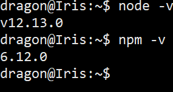

Hosting a Discord.js Bot¶
Introduction¶
In this article you will learn:
- What is needed to host a Discord.js Bot.
- How to keep the bot running after closing the SSH session.
In this article, we assume that:
- You are using discord.js as your library
- You have confirmed that your bot is working locally.
- You know how to establish an SSH connection.
- You know how to use FTP/SFTP to upload files.
- You have a Linux VPS (Debian/Ubuntu).
Don't know how to connect to your server? Check out this guide.
Upgrading packages¶
To ensure we have a smoother experience we should install some packages which includes some commands we may or may not use in the guide please either make sure you are executing these as root/a user with sudo.
apt update && apt upgrade -y
apt install sudo screen curl unzip -y
apt install curl dirmngr apt-transport-https lsb-release libgnutls30 ca-certificates -y
Warning
You should run this first, we use curl later on.
Installation¶
Node.js¶
For a JavaScript discord bot, you will need to have Node.js and npm installed on the server. To install Node.js & npm run the commands listed. You can choose which version to install if you have a preference however I recommend that you should choose v16. V17
curl -sL https://deb.nodesource.com/setup_17.x | sudo -E bash -
sudo apt -y install nodejs
V16
curl -sL https://deb.nodesource.com/setup_16.x | sudo -E bash -
sudo apt -y install nodejs
V12
curl -sL https://deb.nodesource.com/setup_12.x | sudo -E bash -
sudo apt -y install nodejs
v10
curl -sL https://deb.nodesource.com/setup_10.x | sudo -E bash -
sudo apt -y install nodejs
Verify that node is installed correctly.
node -v
npm -v

If you do not get a response from above or something went wrong, please take a screenshot of what went wrong and ask for help in our support server.
Getting your bot onto the VPS¶
First, you should zip your bot folder (don't zip your node_modules) in preparation for what you should do next after you finish zipping your bot files with an SFTP client of your choice, you should upload the zipped file which should contain all your files to the server, you should also remember the name of the zipped file.
Note
Don't have an SFTP client? you can download one Here.
unzip bot.zip
cd botName
npm install
Running the Bot¶
You can now start your bot using
node filename.js
Note
The filename would be the main node file e.g index.js, bot.js or Botname.js
To exit hit Ctrl + C
Warning
I: You should always test things before using the methods to ensure the bot can load up fine.
II: Avoid committing your token to GitHub if you use that.
III: Do not copy your node_modules folder use npm install, it saves you time and allows the dependencies to be built correctly.
If everything went okay this far, you're left with one issue. While the bot is online on your server, it's only running inside of the current SSH session. Once you end that session, the bot's process gets terminated with it. To prevent this from happening, here are a few different methods:
24/7¶
If you have successfully run the bot from the command line from above without any errors or issues then you should be ready to set up 24/7 bot hosting to keep the bot online.
This has some advantages over simply running it in an SSH session:
- The bot runs in the background 24/7 unless it crashes.
- The Bot loads itself on reboot so no need to manually run it again.
- Easier to manage via CLI.
- You do not need to actively manage the bot.
There are multiple ways to run the bot 24/7, feel free to choose the best method for you, personally I recommend pm2.
Screen¶
One way of achieving a 24/7 bot would be using screen to keep the bot running in the background
Warning
screen does not boot on load or write logs to the disk automatically, reboots would kill the screen due to only being a virtual session.
To start your bot with screen, first, make sure you have screen package installed.
Installation¶
You can install screen using the one-liner below:
sudo apt update && sudo apt install screen -y
Usage¶
You can then start your bot by using the command below:
screen -S <BotName> -L node x
Hint
Replace x with the correct filename for your bot, for example:
screen -S aero -L node index.js
This should create a session you can safely leave without fear of it shutting down when you leave,
You can leave the screen via CTRL+AD from this session so your bot remains working after you leave.
You can re-attach to the running screen by running screen -r BotName and then terminate the bot by using CTRL+C.
systemd¶
You can also use systemd as the service manager for your bot.
Installation¶
Systemd requires a service description file to be created.
You can create it using your favorite editor and save it to /lib/systemd/system/bot.service:
[Unit]
Description=My Node JS Bot
After=multi-user.target
[Service]
WorkingDirectory=/root/botFolder
User=root
ExecStart=/usr/bin/node index.js
Type=simple
Restart=always
RestartSec=15
[Install]
WantedBy=multi-user.target
You need to replace the proper path for the bot folder as well as the startup command.
Assuming the bot files are on /root/bot the file will look like this for a discord.js bot:
[Unit]
Description=My wonderful bot
After=multi-user.target
[Service]
WorkingDirectory=/root/bot
User=root
ExecStart=/usr/bin/node bot.js
Type=simple
Restart=always
RestartSec=15
[Install]
WantedBy=multi-user.target
After you finish creating the file, you need to run sudo systemctl daemon-reload which will tell systemd to re-scan for services.
Usage¶
Below are some command usages for systemd.
sudo systemctl daemon-reload # Re-scans for service changes.
sudo systemctl enable bot # Enables auto-start for the service named 'bot'.
sudo systemctl start bot # Starts the 'bot' service.
sudo systemctl stops bot # Stops the 'bot' service.
sudo systemctl restart bot # Restarts the 'bot' service.
PM2¶
PM2 is a process manager for the JavaScript runtime Node.js which can be used to keep node application alive after a killed SSH session. PM2 can easily start/stop/restart your bot as well as provide logging.
Warning
PM2 will restart when the bot crashes which can result in a boot loop.
Installing PM2¶
Run the following commands...
npm install pm2@latest -g
Starting the bot¶
pm2 start <botfile.js>
note: Be in the same directory or use absolute paths.
Commands¶
To check the status
pm2 ls
To check logs
pm2 logs 0
To enable systemd pm2
pm2 startup
PM2 tips¶
- Use
pm2 saveto save the processes. - Use
pm2 resurrectto revive them in the event of a reboot and the processes did not come back. - PM2 has a web app which can be found here.
pm2 lswill show all the running node instances.- PM2 commands can be found here